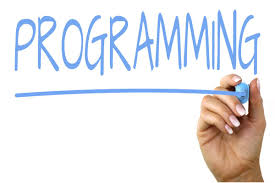

Felipe Restrepo Calle
Felipe Restrepo Calle
Associate Professor
Coordinator - Master of Science in Computer Engineering
Department of Systems and Industrial Engineering
National University of Colombia
Bogotá D.C., Colombia
Office: 114 Building 453 (Engineering classrooms)
Phone: +57 1 316 5000 ext. 14077/14011
E-mail: feres...@unal.edu.co
Coordinator - Master of Science in Computer Engineering
Department of Systems and Industrial Engineering
National University of Colombia
Bogotá D.C., Colombia
Office: 114 Building 453 (Engineering classrooms)
Phone: +57 1 316 5000 ext. 14077/14011
E-mail: feres...@unal.edu.co
Research
Research group: Programming Languages and Systems - PLaS
Fields of interests
- Computer programming and engineering education.
- Data science and machine learning.
- Fault tolerance, dependability, methods and tools for dependable design in embedded systems, approximate computing.
- Programming languages, automatic source code analysis, language processors.
Publications list
More relevant projects
UNCode |
Programming paradigms |
| UNCode: Interactive system for learning and automatic evaluation of computer programming skills.
More info - Repository. |
Educational web site for the introduction to the programming paradigms, including several tutorials for different languages. |
IRIS
|
Software Hardening Environment - SHE
|
| Accessibility tool for visually impaired children. It allows students perceive figures using their hands. |
Tool for the automatic hardening of source code in the design of dependable embedded systems. |
See more projects.
Courses
| Introduction to programming with Python.
Free virtual MOOC (online). |
Introduction to programming with Python |
Current courses
- 2024-1 Programming languages (undergraduate)
- 2024-1 Masters Seminar I (master's degree)
- 2024-1 Masters Research Seminar II (master's degree)
- 2024-1 Educational research in the engineering classroom (master's degree)
- 2024-1 Data analysis and visualization (master's degree)
- 2024-1 Natural language processing and understanding - NLP (master's degree)
- 2024-1 Application Development with Large Language Models - LLMs
See all courses.